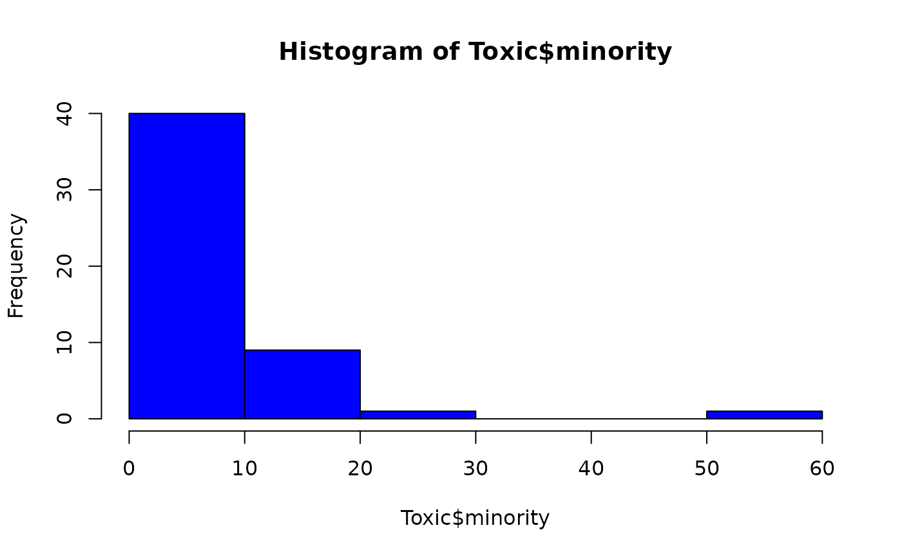
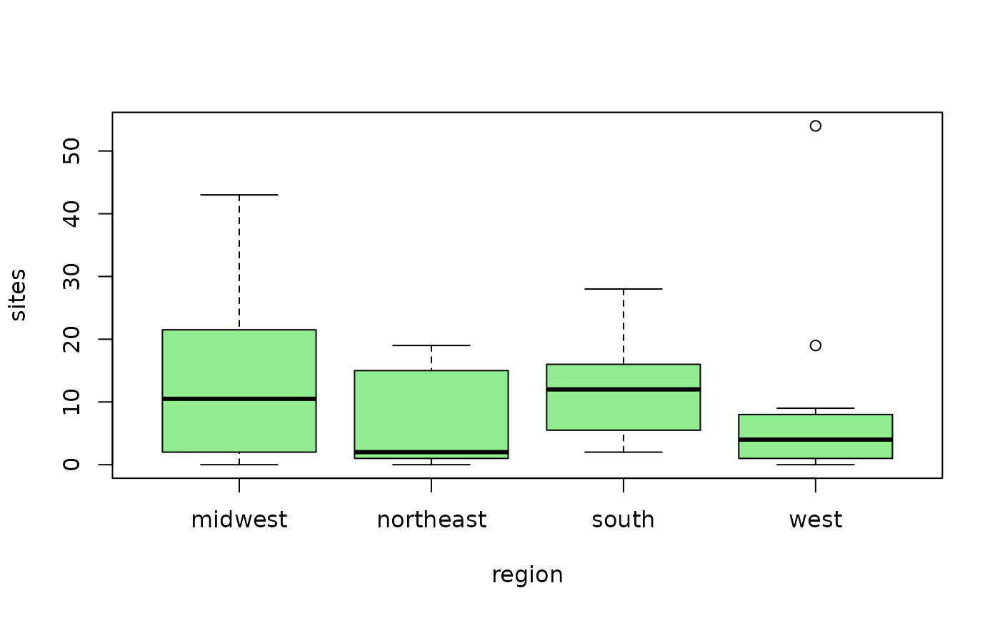

Hazardous waste sites near minority communities
Data for Exercises 1.55, 5.08, 5.109, 8.58, and 10.35
Toxic
Format
A data frame/tibble with 51 observations on five variables
- state
U.S. state
- region
U.S. region
- sites
number of commercial hazardous waste sites
- minority
percent of minorities living in communities with commercial hazardous waste sites
- percent
a numeric vector
References
Kitchens, L. J. (2003) Basic Statistics and Data Analysis. Duxbury
Examples
hist(Toxic$sites, col = "red")hist(Toxic$minority, col = "blue")qqnorm(Toxic$minority)qqline(Toxic$minority)boxplot(sites ~ region, data = Toxic, col = "lightgreen")tapply(Toxic$sites, Toxic$region, median)#> midwest northeast south west #> 10.5 2.0 12.0 4.0kruskal.test(sites ~ factor(region), data = Toxic)#> #> Kruskal-Wallis rank sum test #> #> data: sites by factor(region) #> Kruskal-Wallis chi-squared = 4.8048, df = 3, p-value = 0.1867 #>